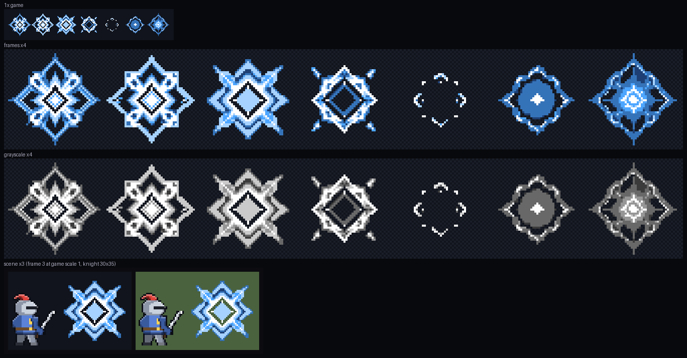
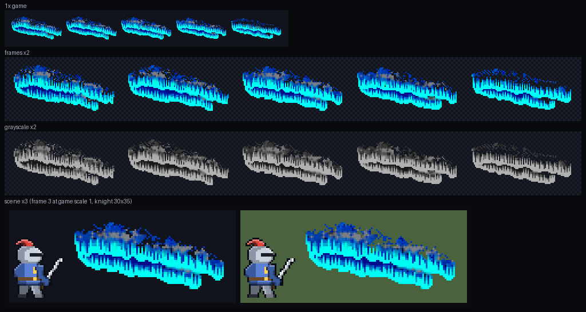
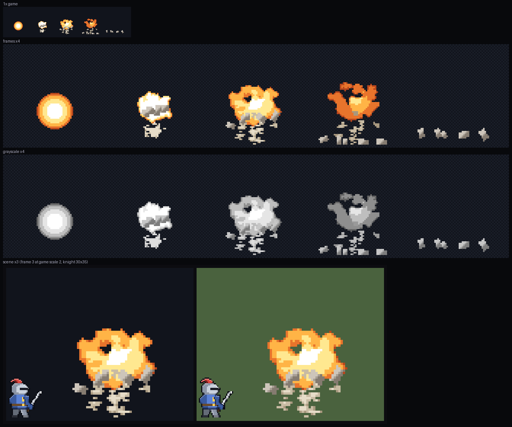
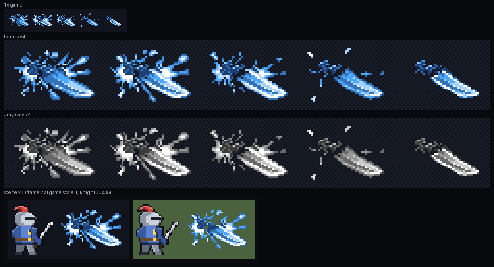

아트 자동 루프 — 생성 → 검수 → 수리
스펙
docs/specs/art-loop.md · 상태 초안 · 2026-10-21 · 이 페이지를 만드는 데 유료 호출 0회요지
- 그림 일감 하나를 에이전트가 뽑고 → 검수하고 → 고치고 → 다시 검수한다. 합격한 결과만 사용자 앞에 놓는다.
- 사용자가 하는 일은 두 번뿐: ① 묶음 계획 승인(무엇을·어떤 길로·유료 몇 회까지) ② 최종 전후 확인. 그 사이에는 묻지 않는다.
- 수리 에이전트는 픽셀을 직접 찍지 않는다. 정해진 수리 연산(부스러기 지우기·양자화·프레임 순서·침식 등) 중에서 고르기만 하고, 스크립트가 실행한다. 그래서 결과를 다시 만들 수 있다.
- 멈춤: 유료 상한 · regen 2번 · 두 바퀴 연속 점수 정체 → 가장 나은 판을 남긴다(원래 그림보다 못하면 원래 그대로).
- 게임 적용은 사용자 확인 뒤에 한다. 최종 판정은 취향 기록에 쌓여 다음 비평의 기준이 된다.
흐름 (일감 하나)
계획 승인
사용자 ①
사용자 ①
→
생성
무료 먼저 · 후보 N
무료 먼저 · 후보 N
→
순위
비평 1회
비평 1회
→
검수
qa.py + 비평, 합격선 A
qa.py + 비평, 합격선 A
→
완료
pass
pass
→
전후 확인
사용자 ②
사용자 ②
fix → 수리(연산 목록 → repair.py) → 다시 검수, 최대 3번 · 그래도 안 되면 regen
regen → 비평의 "바꿀 것"을 프롬프트·기준 그림에 넣어 다시 생성, 최대 2번 · 무료 길부터
regen → 비평의 "바꿀 것"을 프롬프트·기준 그림에 넣어 다시 생성, 최대 2번 · 무료 길부터
역할
| 역할 | 누가 | 하는 일 |
|---|---|---|
| 계획 | 에이전트 art-planner | 길·후보 수·유료 상한·프롬프트·기준 그림 → plan.json. 묶음을 한 장으로 승인 요청 |
| 생성 | 스크립트 + 에이전트 | 무료: ComfyUI 시안(Windows), vfx_workbench·pixelart_workbench, 기존 그림 변형 · 유료: PixelLab 키 그림·애니(최종 고른 것만) |
| 검수 | qa.py + pixel-critic | 후보가 여럿이면 순위 → 1등 한 장 판정 (pass / fix / regen) |
| 수리 | 에이전트 art-repairer + repair.py | 결함을 읽고 연산 목록 JSON → 스크립트가 실행, 새 판 v2·v3… |
| 진행 | loop.py | 일감 상태를 파일로 들고 "다음 할 일"을 알려 준다. 끊겨도 다시 부르면 이어 간다 |
수리 연산 (무료·결정적)
| 연산 | 하는 일 | 쓰는 경우 |
|---|---|---|
drop_crumbs n · drop_isolated | 작은 떨어진 덩어리·외톨이 점 지우기 | 부스러기·잔점·색종이 |
lift_dark t | 어두운 픽셀 밝기 끌어올리기 | 어두운 덩어리로 뭉개짐 |
quantize n · recolor | 색 수 줄이기 · 색 무리 바꾸기 | 색 과다·AI 흐림·탁한 얼룩 |
frames order / drop / dup | 프레임 순서·빼기·복제 | 흐름 뒤섞임·급변 |
fade_out k · fade_in k | 테두리부터 깎은 사라짐 프레임 · 나타남 프레임 덧붙이기 | 툭 끊김·나타남 없음 |
anchor bottom / center · fit w h · tile_seam | 바닥·가운데 맞춤, 규격 칸 맞추기, 루프 이음매 | 떠 있음·잘림·이음매 |
workbench … | pixelart_workbench 명령 (무료) | 위 연산으로 안 되는 국소 손질 |
첫 묶음 (시범 4건) — 지금 모습
아래 그림은 pixel-qa 시험 때 만든 검수 시트다 (게임 모습 1배 · 프레임 4배 · 흑백 · 기사 옆). 수리 길 2건, 다시 뽑기 길 2건을 다 밟게 골랐다.
e04 마력 폭발 노바 (7프레임)
비평 fix움직임 2
비평 fix움직임 2
프레임 순서가 뒤섞이고 5번에서 툭 꺼진다.
예상 길: 수리 frames order + fade_out · 유료 0

e30 별빛 화살비 오로라 (원래 색)
비평 fix색 888개
비평 fix색 888개
위쪽 회색 얼룩이 탁하고 색이 과하다. 끝 프레임이 튄다.
예상 길: 수리 quantize 12 + recolor · 유료 0

k37 대공성포 막타 (2배, 바닥 기준)
비평 regen사용자 동의
비평 regen사용자 동의
아래 파편이 잡부스러기이고 바닥에 안 붙는다.
예상 길: 수리 먼저(drop_crumbs·anchor bottom) → 안 되면 다시 뽑기 · 유료 상한 4

k09 대검 횡참 명중
비평 regen의도 2
비평 regen의도 2
수평 참격이 아니라 기운 칼날 물체로 읽힌다.
예상 길: 다시 뽑기 — 무료 vfx_workbench → 안 되면 PixelLab · 유료 상한 4

묶음 유료 상한 8회예상 0~4회세는 법: 응답 usage 합계 · 계정 바닥 300
e04·e30·k09 는 비평만 지적했고 사용자가 문제로 본 적은 없다 → 최종 확인에서 "원래 것이 낫다"면 그대로 둔다.
수용 기준
- ❌ 시범 4건이 계획 승인 뒤 사용자 입력 없이 끝까지 돈다 (pass 또는 멈춤 이유와 함께)
- ❌ 유료 호출이 일감·묶음 상한 안이고 log.jsonl usage 합계와 맞는다
- ❌ 결과는 합격선 A 를 넘거나, 멈춘 이유와 가장 나은 판을 남긴다. 원래보다 못한 판을 내지 않는다
- ❌ 세션을 끊고
loop.py next를 다시 부르면 같은 자리에서 이어 간다 - ❌ 일감 하나가 (생성 대기 빼고) 30분 안
- ❌ 4건 중 3건 이상을 사용자가 "좋아졌다"고 본다 — 사용자 확인
설계 단계라 전부 미시험이다.
결정할 것
- 시범 묶음: e04·e30·k37·k09 4건, 묶음 유료 상한 8회로 갈지
- 진행 방식: loop.py 상태 기계 + 세션이 에이전트 호출 (추천 — 끊겨도 이어 가고 단계가 파일에 남는다) / Workflow 도구로 한 번에 (빠르지만 실행마다 승인)
- 게임 적용: 사용자 확인 뒤 적용 (추천) / 합격하면 바로 적용하고 나중에 확인
ComfyUI 는 Windows PC 에만 있다. 맥에서 돌리면 무료 생성 길은 vfx_workbench·pixelart_workbench 뿐이다.